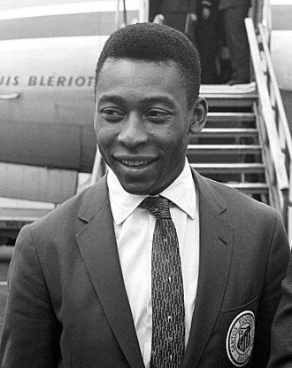

Pelé
Edson Arantes do Nascimento ONM • OMC (Três Corações, 23 de outubro de 1940 – São Paulo, 29 de dezembro de 2022), mais conhecido como Pelé, foi um futebolista brasileiro que atuou como atacante. Descrito como o "Rei do Futebol", é amplamente considerado como o maior atleta de todos os tempos. Em 2000, foi eleito Jogador do Século pela Federação Internacional de História e Estatísticas do Futebol (IFFHS) e foi um dos dois vencedores conjuntos do prêmio Melhor Jogador do Século da FIFA. Nesse mesmo ano, Pelé foi eleito Atleta do Século pelo Comitê Olímpico Internacional. De acordo com a IFFHS, é o quinto maior goleador da história do futebol em jogos oficiais, tendo marcado 767 gols em 812 partidas. No total foram 1283 gols em 1363 jogos (incluindo amistosos não-oficiais), um recorde mundial do Guinness. Durante sua carreira, chegou a ser durante um período o atleta mais bem pago do mundo.
Pelé começou a jogar pelo Santos Futebol Clube aos quinze anos de idade, e pela Seleção Brasileira aos dezesseis. Durante sua carreira na Amarelinha, sagrou-se campeão de três edições da Copa do Mundo FIFA: 1958, 1962 e 1970, sendo o único a fazê-lo como jogador, sendo também, o jogador mais novo a ganhar uma copa do mundo na história do futebol, com apenas 17 anos.

Contando os gols oficiais, Pelé é o segundo maior goleador da história da Seleção Brasileira, com 77 gols em 92 jogos. Em clubes, ele é o maior artilheiro da história do Santos e os levou a várias conquistas, com destaque para duas Copas Libertadores da América e dois Mundiais Interclubes, vencidos em 1962 e 1963. Conhecido por conectar a frase "jogo bonito" ao futebol, a "ação eletrizante e a propensão a objetivos espetaculares" de Pelé fizeram dele uma estrela rapidamente, e sua equipe fez turnês internacionais, a fim de aproveitar ao máximo sua popularidade. Após se aposentar em 1977, tornou-se embaixador mundial do futebol e fez muitos trabalhos de atuação e comerciais. Em janeiro de 1995, foi nomeado ministro do esporte no governo Fernando Henrique Cardoso. Em 2010, foi nomeado presidente honorário do New York Cosmos. Com média de quase um gol por partida ao longo de sua carreira, Pelé era especialista em chutar a bola com qualquer um dos pés, além de antecipar os movimentos de seus oponentes em campo. Embora atuasse predominantemente como atacante, ele podia recuar e assumir um papel de playmaker, fornecendo assistências com sua visão e habilidade de passe. Considerado um jogador completo, também tinha como característica a qualidade no drible para passar pelos adversários. No Brasil, Pelé é aclamado como herói nacional por suas realizações no futebol e por seu apoio franco a políticas que melhoram as condições sociais dos pobres. Ao longo de sua carreira e aposentadoria, recebeu vários prêmios individuais e de equipe por seu desempenho em campo, suas conquistas recordes e seu legado no esporte. Desde 1977, quando foi noticiado que teve seu rim direito removido, Pelé sofria de problemas de saúde e passou por dois procedimentos cirúrgicos, em 2012 e 2015, a segunda feita para corrigir um erro médico da primeira. Então, de cadeira de rodas, não participou da Copa do Mundo FIFA de 2018, sendo essa a primeira edição em sessenta anos na qual ele não esteve presente nem como jogador, comentarista, garoto-propaganda ou convidado. O jogador foi internado mais uma vez em 2014, com cálculos renais, uretrais e vesicais, além de, posteriormente, também ser diagnosticado com infecção urinária e problemas renais. Em seus últimos anos de vida, sofria de câncer de cólon — diagnosticado em 2021 — e entrou em cuidado paliativo em 2022. Um mês após essa nova internação, Pelé morreu, no dia 29 de dezembro de 2022 na capital paulista, aos oitenta e dois anos, vítima de falência múltipla de órgãos. Pelé foi velado em 2 e 3 de janeiro de 2023 e enterrado no Memorial Necrópole Ecumênica, em Santos.
Carreira em clubes
Santos
Em 1956, Brito levou Pelé para a cidade de Santos para experimentar jogar para o time profissional Santos Futebol Clube, dizendo à administração do Santos que o jovem de quinze anos seria "o maior jogador de futebol do mundo". Pelé impressionou o treinador do Santos, Luís Alonso Pérez (Lula) no Estádio Urbano Caldeira, e assinou um contrato profissional com o clube em junho de 1956. Pelo contrato, Pelé recebia um salário de seis mil cruzeiros, valor que enviava para sua mãe. Pelé inicialmente atuou na equipe amadora do Santos, marcando 13 gols em 13 jogos. Ele fez a sua estreia profissional em 7 de setembro de 1956, com quinze anos, contra o Corinthians de Santo André e teve um bom desempenho em uma vitória de 7–1, marcando o primeiro gol de sua carreira profissional durante a partida. Zaluar, goleiro do Corinthians, mandou fazer um cartão de apresentação após se aposentar e começar a trabalhar como corretor, no qual se identificava como "goleiro do primeiro gol de Pelé".

Pelé iniciou a temporada de 1957 na reserva, por ser considerado ainda muito jovem, e por ter como concorrente na posição Emmanuele Del Vecchio, principal referência no ataque santista. Mesmo atuando na reserva, Pelé chamou a atenção de dirigentes gaúchos no início do ano, quando o Santos visitou o Rio Grande do Sul. O Brasil de Pelotas tentou trocar seu atacante Joaquinzinho por Pelé, o que foi negado pelo treinador santista. Já o Grêmio chegou a consultar o Santos sobre a possibilidade de empréstimo de Pelé. Pelé começou a se destacar nacionalmente no Torneio Rio-São Paulo de 1957. Neste, foi o artilheiro da equipe, junto com Dorval, não obstante ter entrado como reserva em mais da metade das partidas disputadas. No início de junho, Pelé contava com 30 jogos e 18 gols, entre partidas amistosas e oficiais. Nesse mês, o Santos formou com o Vasco da Gama um combinado para disputar o Torneio Internacional do Morumbi, organizado pelo São Paulo para ajudar na construção do seu estádio. Como os jogos do combinado seriam no Maracanã, optou-se por se utilizar a camisa vascaína. Na primeira partida, contra o português Belenenses, Pelé marca três gols na goleada por 6–1.
Pelé ainda marcaria um gol na partida seguinte, contra o Flamengo, e outro gol na última partida do combinado, contra o São Paulo, totalizando cinco gols em três partidas. As atuações do jogador foram elogiadas pela imprensa, que vaticinava o "nascimento do futuro craque da Seleção", e chamaram a atenção do treinador da Seleção Brasileira, Sylvio Pirillo. Um mês depois de finalizado o torneio, Pelé foi convocado pela primeira vez para a Seleção, tendo apenas dez meses de carreira. As atuações do jogador também chamaram atenção do Vasco, que tentou sem sucesso contratá-lo por duas vezes naquele ano.
Milésimo gol
Um dos momentos mais cultuados de sua carreira é o milésimo gol, anotado em 19 de novembro de 1969, em uma partida contra o Vasco da Gama, quando Pelé marcou a partir de um pênalti, no Estádio do Maracanã. Marcado o pênalti, seu nome passou a ser gritado no Maracanã, até mesmo pela torcida vascaína. Pelé chutou no canto esquerdo de Andrada, que chegou a tocar na bola, mas não conseguiu evitar o gol. Ao cair e perceber que a bola tinha entrado, Andrada socou a grama, enquanto Pelé comemorava o gol, em imagem considerada histórica. Andrada permaneceu no chão por mais um tempo, e só levantou ao ser erguido por um companheiro. O goleiro no dia anterior tinha manifestado o desejado de evitar o gol número mil; anos mais tarde, afirmou sobre o evento que "o gol veio e em pouco tempo você vai se acostumando e você acaba o adotando como um filho".
Feito o gol, Pelé correu para a bola, beijando-a. O jogador foi cercado por jornalistas e carregado por dirigentes do Santos. Pelé dedicou o gol às "crianças, "pessoas pobres" e "velhinhos cegos". O discurso foi criticado por alguns, que esperavam uma fala contra a ditadura militar brasileira, que um ano antes tinha editado o Ato Institucional n.º 5 (AI-5), considerado o mais duro dos atos institucionais do regime militar. O jogo foi suspenso por 20 minutos, e Pelé deu uma volta olímpica no estádio, com uma camisa do Vasco com número "1000" nas costas. Apesar de tudo, lendas contam que o milésimo gol de Pelé, na verdade, teria sido feito em partida contra o Botafogo da Paraíba em partida amistosa no dia 14 de novembro de 1969. A história registrada é que o Santos venceu por 3 a 0. Manoel Maria já havia marcado duas vezes quando sofreu um pênalti, o qual Pelé não queria bater. Depois de muita insistência, foi a contragosto para a cobrança. Fez o gol 999 e depois foi virar goleiro, para reservar para o Maracanã o milésimo gol.
Títulos e recordes
O número de gols de Pelé é frequentemente relatado pela FIFA como sendo 1281 gols em 1363 jogos. Este número inclui gols marcados em amistosos de clubes, como as turnês internacionais que Pelé completou com o Santos e o New York Cosmos, e alguns jogos que disputou para as equipes das Forças Armadas Brasileiras enquanto ainda jogava no Brasil. Ele foi incluso no Guinness World Records por mais gols marcados no futebol. Nas estatísticas oficiais, a temporada em que Pelé mais balançou as redes pelo Santos foi o ano de 1958, quando anotou 66 gols. O alemão Gerd Müller quebrou seu recorde na temporada 1972/1973, por apenas um gol, pelo Bayern de Munique; o recorde atual de mais gols em uma única temporada por uma única equipe pertence ao argentino Lionel Messi, que marcou 72 vezes na temporada 2011/2012, pelo FC Barcelona. Além disso, de acordo com jornal espanhol As, Pelé aparece na segunda posição entre os jogadores com mais gols em cobranças de falta a partir de um chute direto (ou seja, o gol precisa ter saído de um chute direto, sem que outro jogador tocasse na bola antes ou depois da cobrança), com setenta gols marcados desta forma.
Sumário
Os números de Pelé diferem entre as fontes principalmente devido a jogos amigáveis. A tabela a seguir é um sumário de fontes que inclui dados dos sites oficiais do Santos e da FIFA, entre outros.
| Partidas | Gols | Médias | |
|---|---|---|---|
| Torneios domésticos | 702 | 656 | 0,94 |
| Torneios internacionais | 18 | 24 | 1,33 |
| Oficial | 812 | 757 | 0,93 |
| Partidas amigáveis e torneios extintos | 554 | 526 | 0,95 |
| Total | 1 366 | 1 283 | 0,94 |
| Partidas | Gols | Médias | |
|---|---|---|---|
| Santos | 1116 | 1091 | 0,98 |
| New York Cosmos | 111 | 65 | 0,59 |
| Brasil | 114 | 95 | 0,83 |
| Outro | 25 | 32 | 1,28 |
| Total | 1 366 | 1 283 | 0,94 |